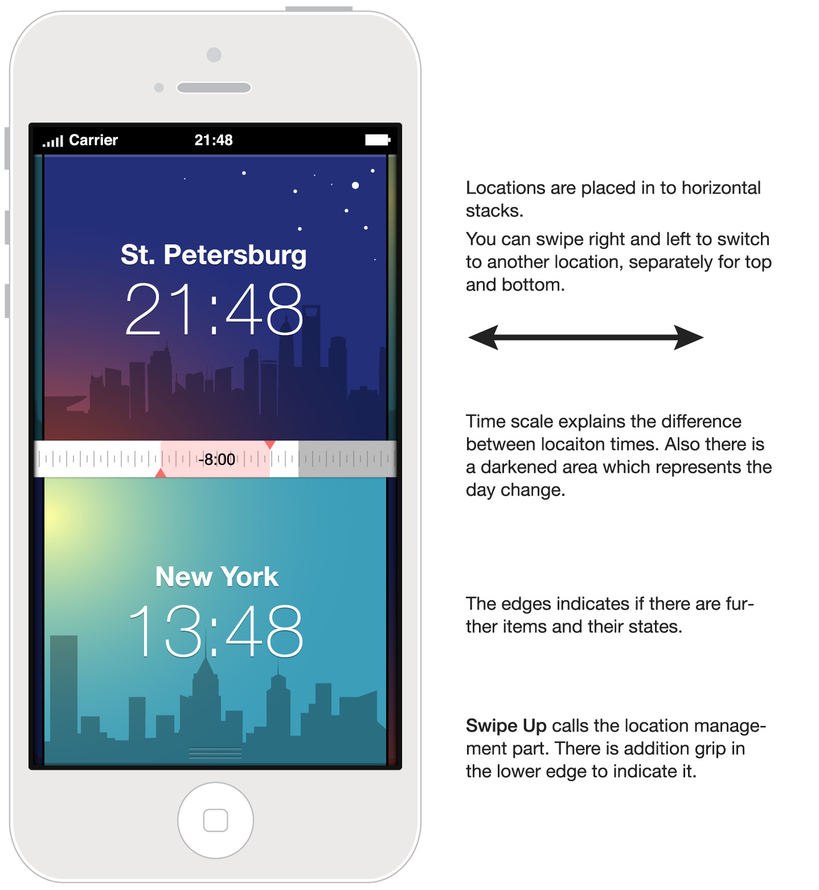
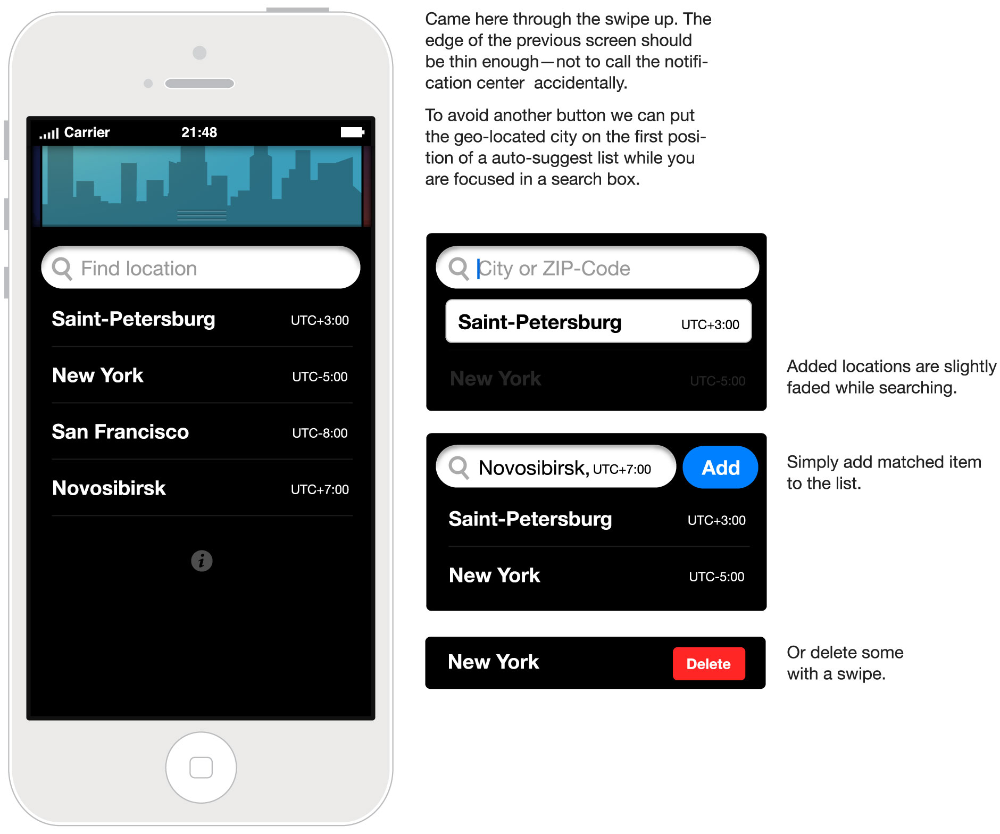

Lots of people collaborate with their colleagues over the different time zones.
The main aid which the app provides is answering the question “What time is it now in London?”. And the other question comes with almost the same frequency—”What time will it be in Baselona when it’s 10:30 AM here?”
And finally it is not nescessary to use “here” as a starting point. You can just compare any locations, but you current location is default and it sets the current time.
The app has fit in one screen. Here you can see the time comparison for two locations:

So what if you need to use not the current time but some other certain period?
There is a natural circular gesture for it—just spin the finger round the screen clockwise or counter-clockwise to arrange the need time, as like you spin the real clock hand. You’ll learn this gesture through the coachmarks on the first launch.
Managing the locations is simple. It’s just a list where you can add items through the search and delete items with iOS standart swipe on an item gesture. By default it is filled with your current location and some sample cities.
